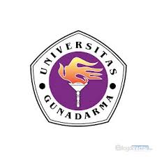
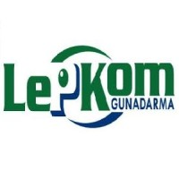
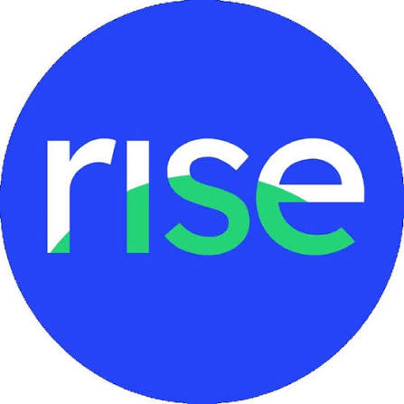
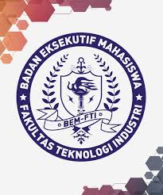
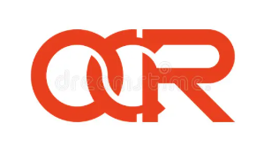
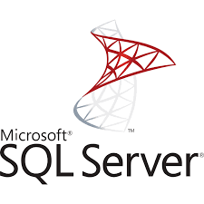
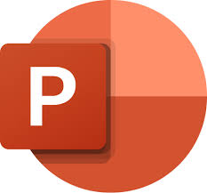
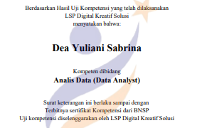
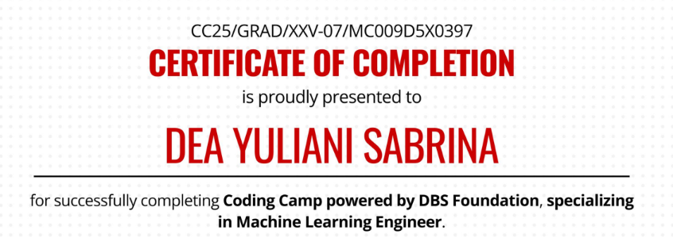

Hello, Everyone👋

Data Analyst | Machine Learning Engineer | System Analyst | Artificial Intelligence
View My Projects
Data Analyst | Machine Learning Engineer | System Analyst | Artificial Intelligence
View My ProjectsI am an Informatics graduate from Universitas Gunadarma with hands-on experience in Data Analytics, Machine Learning, Artificial Intelligence, and System Analysis. I am passionate about turning data, business problems, and technology into structured and practical solutions. My experience covers the end-to-end problem-solving process: understanding requirements and business processes, preparing and analyzing data, developing Machine Learning and Deep Learning models, evaluating results, and translating technical findings into clear insights and documented solutions. I have worked with datasets of 100,000+ records and developed projects involving predictive modeling, computer vision, sentiment analysis, OCR, NLP, and data visualization using Python, SQL, Excel, Power BI, Scikit-learn, and TensorFlow/Keras. Beyond project work, I have gained practical experience as a System Analyst, where I conducted requirements gathering, analyzed business processes, prepared Software Requirements Specification (SRS), developed UML and system documentation, and communicated between stakeholders and development teams. This experience strengthened my ability to look beyond the technical implementation and understand why a solution is needed, what problem it should solve, and how it can deliver value to its users.
As a Computer Laboratory Assistant, I have supported 100+ students in practical sessions involving SQL, Go, and C#, strengthening my technical troubleshooting, problem-solving, and communication skills. My experience as a Class Administrator also exposed me to data management, validation, feedback analysis, reporting, and coordination. I approach every project with a combination of analytical thinking, technical execution, and system-oriented problem solving. Whether the challenge involves uncovering insights from data, developing an intelligent model, or translating business requirements into a functional system, I focus on understanding the problem first and building a solution that is relevant, measurable, and useful. I am continuously expanding my expertise at the intersection of Data, AI, and Technology,with the goal of creating solutions that transform complex problems into meaningful and actionable outcomes.

Bachelor of Informatics, Gunadarma University (2022 – 2026) SMAN 11 Depok (2019 – 2022)
SMAN 11 Depok (2019 – 2022)




Interactive Dashboard — Data Analytics & Visualization
An interactive financial and sales dashboard designed to analyze revenue, profitability, customer segments, product performance, and sales trends. Transforms raw transaction data into executive-level insights.
View Case Study →
Undergraduate Thesis — AI, OCR, NLP & Mobile App
An Android-based application that analyzes food product labels to identify potential allergens and halal-related ingredients using OCR, NLP, fuzzy matching, and a structured knowledge base.
View Case Study →
Real Client System Analysis — Business Process & Requirement Analysis
A client-based software project designed to digitalize restaurant operations. Focused on analyzing business processes, gathering requirements, and designing system structures for the development team.
View Case Study →




Analisis Data (Data Analyst)
Demonstrates proficiency in the end-to-end data analysis process, including data cleaning, exploratory data analysis (EDA), data visualization, and transforming complex datasets into actionable business insights using SQL, Python, Excel, and Power-BI.
19 September 2026
View Certificate →
Machine Learning Engineer
Completed an intensive and highly selective training program powered by DBS Foundation and Dicoding, focusing on machine learning fundamentals, model development, deployment skills, and professional readiness.
Program Period: February 10, 2025 – July 16, 2025
View Certificate →Let’s connect or collaborate! 👇